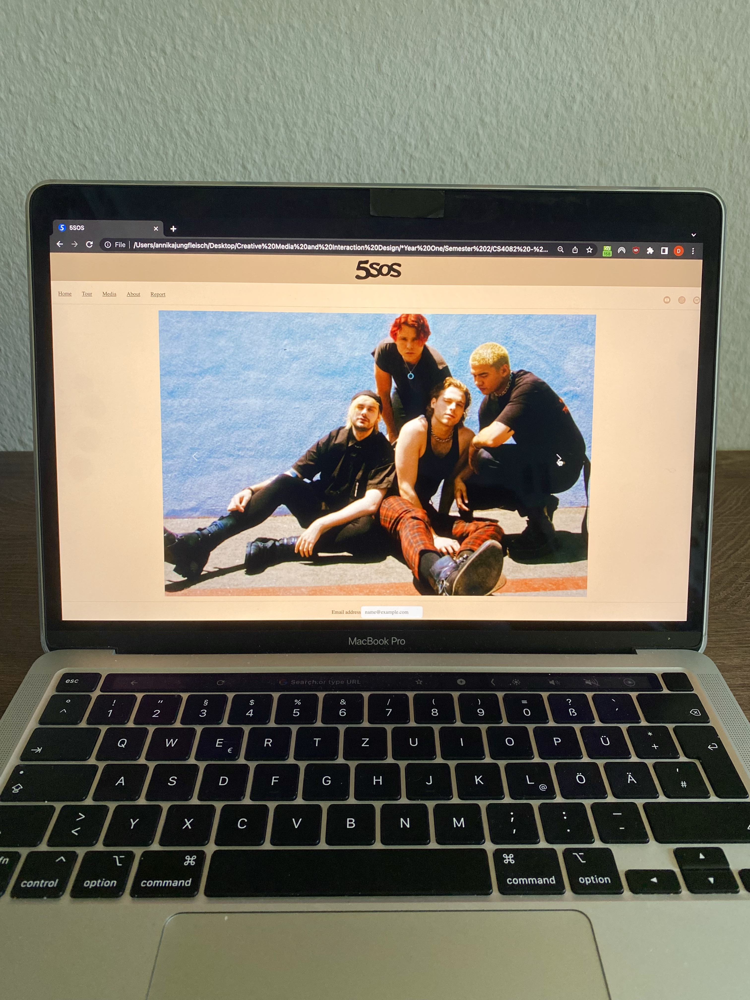

LearnBetter
"LearnBetter" is an app that functions as a Virtual Learning Environment to assist college students during remote studying. The app was created as part of a group project during my first year as a Digital Media Design student utilising Mural and Figma. "LearnBetter" consists of eight features which can be seen on the second picture in the carousel. Among other things, "LearnBetter" helps students track their performance, lets them reach out and receive required help, limits distracting phone activities, and provides a virtual group learning option. Its main purpose is to limit distractions from other phone features and promote motivation. Furthermore, the app supports students with different resources so they can get the help needed even when studying remotely.Musicians Website
This website presents a conceptual redesign for the official online presence of the Australian pop-rock band 5 Seconds of Summer (5SOS), formed in late 2011. The design aims to resolve identified user experience challenges, particularly those that arose following the release of their most recent album. The website's navigation is organised into four tabs: The Home page serves as an introductory portal to 5SOS and includes essential links to their external online platforms, such as social media accounts. The Tour page provides an overview of forthcoming concert dates and facilitates ticket acquisitions via external websites. The Media page offers comprehensive background information on each 5SOS album, presented in reverse chronological order from newest to oldest. Each album description is accompanied by a five-image carousel. The About page summarises the band members' identities and their respective functions within the group.
